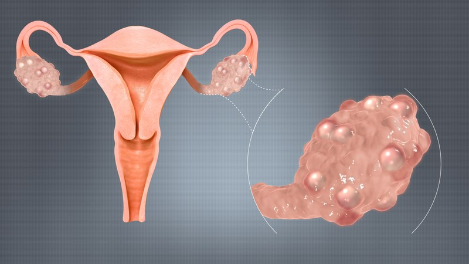

1. Overview: What Is PCOS / PCOD?
Polycystic Ovary Syndrome (PCOS) is one of the most common endocrine and metabolic conditions affecting women of reproductive age worldwide. Rather than a simple disease of the ovaries, PCOS is a multi-system condition characterized by hormonal imbalance, irregular ovulation, and insulin resistance.
Under the clinical care of Dr Prapti Shah, management shifts away from temporary fixes toward holistic, evidence-based metabolic restoration, cycle regularization, skin health, and fertility optimization.

Polycystic Ovaries Anatomy: 3D medical rendering showing enlarged ovary with multiple peripheral subcapsular follicles ("string of pearls").
2. Symptoms & Clinical Features
Menstrual & Ovulatory Signs
- Irregular, delayed, or completely absent menstrual periods (oligomenorrhea / amenorrhea)
- Unpredictable, unusually heavy, or prolonged bleeding episodes
- Difficulty conceiving due to irregular or absent ovulation (anovulation)
Hyperandrogenic & Metabolic Signs
- Excessive facial or body hair growth (hirsutism) on chin, chest, or lower abdomen
- Persistent adult hormonal acne, particularly along the jawline
- Scalp hair thinning or male-pattern hair loss (androgenic alopecia)
- Difficulty losing weight, abdominal weight gain, and insulin resistance patches (acanthosis nigricans)
3. When to Seek Urgent Clinical Care
Seek Immediate Evaluation If You Notice:
- Absence of menstrual periods for 3+ consecutive months: Prolonged lack of progesterone exposure increases the risk of endometrial hyperplasia and requires clinical evaluation.
- Excessive, continuous, heavy menstrual bleeding causing dizziness: Requires immediate evaluation to check hemoglobin levels and rule out structural pathology.
- Marked, rapid-onset hirsutism or deepening of voice: Requires urgent endocrine blood work to rule out androgen-secreting tumors.
4. Diagnosis (Rotterdam Criteria)
PCOS is diagnosed using the internationally recognized Rotterdam Consensus Criteria. A woman is diagnosed when she presents with at least two of the following three features, after excluding other conditions:
- 1. Ovulatory Dysfunction: Irregular or absent menstrual periods indicating infrequent ovulation.
- 2. Hyperandrogenism: Clinical signs (hirsutism, acne, male-pattern hair thinning) or biochemical evidence (elevated free testosterone or DHEA-S).
- 3. Polycystic Ovarian Morphology on Ultrasound: Enlarged ovaries with 20 or more small follicles (2–9 mm) clustered peripherally ("string of pearls" appearance).
5. Metabolic Implications & Long-Term Health
- Insulin Resistance & Type-2 Diabetes: Cells respond less effectively to insulin, driving elevated blood glucose and compensatory hyperinsulinemia.
- Dyslipidemia & Cardiovascular Health: Altered lipid profiles requiring routine metabolic screening.
- Endometrial Health Protection: Regular shedding of the uterine lining is necessary to prevent precancerous endometrial thickening.
- Emotional Well-Being: Addressing hormonal fluctuations that contribute to mood changes, anxiety, and body-image distress.
6. Diagnostic Pathway
- Pelvic Ultrasound: High-resolution sonogram assessing ovarian volume, follicle count, and endometrial stripe thickness.
- Hormonal Profile: Fasting blood work measuring LH:FSH ratio, total/free testosterone, DHEA-S, Prolactin, and 17-OHP (to rule out congenital adrenal hyperplasia).
- Metabolic Panel: Fasting blood glucose, HbA1c, fasting insulin (calculating HOMA-IR), and lipid profile.
- Thyroid Profile: TSH and Free T4, as subclinical hypothyroidism frequently mimics PCOS symptoms.
7. Evidence-Based Treatment Approach
Treatment is tailored to the woman’s personal clinical goals:
- Lifestyle & Nutritional Therapy: The absolute cornerstone. A low-glycemic, anti-inflammatory nutrition plan paired with regular resistance and aerobic exercise improves insulin sensitivity and restores spontaneous menstrual regularity in many women.
- Metabolic Sensitizers: Inositol supplementation and Metformin to reduce hyperinsulinemia and improve ovulatory frequency.
- Cycle Regularization: Cyclic progesterone therapy or low-androgenic oral contraceptive pills to protect the endometrial lining and manage acne/hirsutism.
- Fertility Management: Oral ovulation induction (Letrozole) paired with ultrasound follicular tracking for women desiring pregnancy.
8. Long-Term Living with PCOS
PCOS is not a barrier to a healthy life or motherhood. With structured metabolic support, cycle management, and empowering education, most women achieve healthy pregnancies, clear skin, and vibrant long-term health.
Have Questions About Your PCOS, PCOD & Hormonal Health Report?
Connect with the Gut & Gynae clinic desk to review your scans and medical history at GMC Nagpur, and determine whether conservative observation or minimally invasive treatment is recommended.